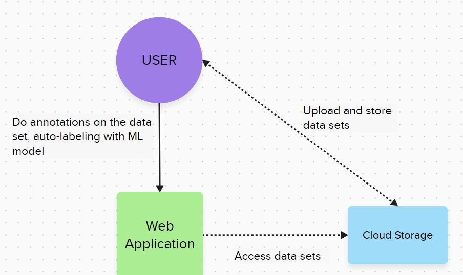

Architecture¶
Niniejszy opis przedstawia architekturę strony internetowej, która została zaprojektowana w celu automatycznego adnotowania danych za pomocą Sztucznej Inteligencji.
Architektura ta skupia się na efektywnym zarządzaniu danymi, przechowywaniu ich, a także wykorzystuje możliwości uczenia maszynowego do automatycznego adnotowania danych.
Nasze rozwiązanie działa w formie mikro serwisu wspierającego narzędzie Label Studio.
Modules:
E-Motion Website.
Responsible for the visual layer of the application regarding ML models (REST API module).
Allows ML Models to be trained on annotated data and used to generate new annotations.
Allows you to switch to Label Studio to correct annotations generated by the ML model.
Label Studio Frontend:
Responsible for the visual layer of the application regarding manual data annotation.
Provides the ability to correct annotations generated by the ML model.
Load and save annotation information using JSON files with appropriate structure.
REST API:
Responsible for communicating with the Cloud Service and Local Database to train the corresponding ML models.
Baza danych.
Stores user account data, saved ML models, and URL links to user projects stored in the cloud.
Chmurowa baza danych.
Stores data for user annotations.
Modele ML.
Responsible for generating new annotations based on manually annotated data.
User functional perspective:
Annotating data initially using Label Studio Front-end.
Training the ML model based on the created annotations.
Generating the rest of the annotations using the ML model.
Improving selected annotations using Label Studio Front-end.
saving the annotations to the database
Communication with Label Studio Front-end:
Label Studio is an open-source tool for manual data annotation.
It includes Label Studio Front-end, which allows us to integrate this tool into our project.
Label Studio uses JSON files to represent the state of data annotation.
The structure of this tool means that in order to exchange information between ML models (training and generating annotations) and already finished annotations, there will be a need to serialize and deserialize JSON files.
In our solution, the annotations will be generated in the JSON convention used by Label Studio, after which the user will be able to manually load them into Label Studio Front-end to correct errors.
The final for annotated data is saved in the same JSON convention and can be used to train another model, or saved.
Authorization: Label Studio has an internal email authorization system, which means that the user will need to have both an account with us and Label Studio if they want to use the functionality provided by Label Studio Front-end
Diagram C4:
Kontekst¶
{kind=link}
Kontener¶

{kind=link}
{kind=link}